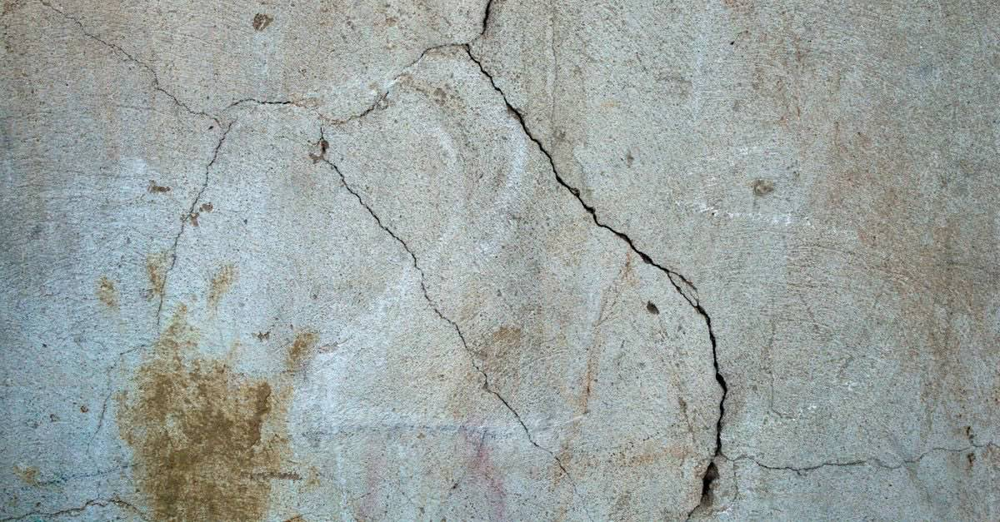

Hasar tespit raporuna itiraz nasıl yapılır? 30 günlük süre ve dilekçe
Binanızın hasar derecesi yanlış belirlendiyse itiraz süresi ilan tarihinden itibaren 30 gün. Kaçarsa idari itiraz hakkı tümüyle biter.

30 gün — hasar tespit sonucunun mahallî ilan tarihinden itibaren. Süre geçerse idari itiraz hakkı tamamen kaybedilir, geriye yalnızca yargı yolu kalır.
Deprem sonrasında devletin yaptığı hasar tespiti, binanız için verilmiş teknik bir not değildir — bir dizi hakkın anahtarıdır. Hasar dereceniz; binanın yıkılıp yıkılmayacağını, hak sahibi olup olamayacağınızı, alacağınız desteği ve eşyanızı alıp alamayacağınızı belirler.
Bu yüzden yanlış belirlenmiş bir hasar derecesi, tek başına yıllar süren bir kayba dönüşebilir. İyi haber şu: itiraz hakkı var. Kötü haber: süresi 30 gün ve bu süre, insanın barınma derdiyle uğraştığı haftalarda işliyor.
Hasar dereceleri ne anlama geliyor?
| Derece | Pratik sonucu |
|---|---|
| Hasarsız | Kullanıma devam; destek yok |
| Az hasarlı | Onarımla kullanılabilir |
| Orta hasarlı | Güçlendirme/onarım gerekir; bazı desteklerde farklı rejim |
| Ağır hasarlı | Yıkım gündemde; hak sahipliği yolu açılır |
| Yıkık | Bina fiilen yok; girmek yasak |
Ağır hasarlı ile orta hasarlı arasındaki fark, çoğu ailenin hayatını belirleyen çizgidir. Aynı şekilde "az hasarlı" verilmiş ama taşıyıcı sisteminde sorun olan bir bina, sonraki depremde çok daha tehlikelidir.
İtiraz süresi: 30 gün, ilan tarihinden itibaren
Fen kurullarınca düzenlenen teknik hasar tespit raporlarına, sonucun mahallî ilan tarihinden itibaren 30 gün içinde itiraz edilebilir. Raporlar aynı süreyle askıda/ilanda kalır.
Kritik
Süre, raporun size posta ile ulaştığı gün değil, mahallinde ilan edildiği gün başlar. "Bana tebliğ edilmedi" savunması pratikte çoğu zaman işe yaramaz. İlan tarihini öğrenip not alın.
Hasar tespit sonucunuzu e-Devlet üzerinden, muhtarlıktan, kaymakamlık ya da valilik ilan panolarından ve İl Çevre, Şehircilik ve İklim Değişikliği Müdürlüğünden öğrenebilirsiniz.
İtiraz nereye ve nasıl yapılır?
- İl Çevre, Şehircilik ve İklim Değişikliği Müdürlüğü — elden, imza karşılığı.
- Valilik veya kaymakamlık evrak birimi.
- Afet bölgelerinde kurulan Hasar Tespit İtiraz ve Koordinasyon Merkezleri.
- Varsa e-Devlet üzerindeki ilgili başvuru adımı.
Kaydını saklayın
Dilekçenizi elden verirken giden evrak numarası alın veya iadeli taahhütlü gönderin. Başvurduğunuzu ispatlayamazsanız, başvurmamış sayılırsınız.
Dilekçede ne yazmalı?
İtiraz dilekçesinin gücü, hukuki cümlelerden değil somut teknik gözlemlerden gelir. Şunları yazın:
- Binanın açık adresi, ada ve parsel bilgisi.
- Bina ile ilişkiniz: malik, hissedar, kiracı, kanuni temsilci.
- Raporda belirlenen hasar derecesi ve ilan tarihi.
- Gerekçeler: hangi kolonda ezilme/çatlak var, taşıyıcı duvarlarda ne görülüyor, binada eğilme veya oturma var mı, zemin katta dükkân için kolon kaldırılmış mı, daha önce esaslı tadilat yapılmış mı.
- Talep: yeniden hasar tespiti yapılması ve derecenin yeniden değerlendirilmesi.
Eklemeniz gereken belgeler: tapu veya kira sözleşmesi örneği, binaya ait fotoğraflar, varsa bağımsız mühendis raporu.
Bu içeriği elle yazmak zorunda değilsiniz: hasar tespiti itiraz dilekçesi şablonu hazır metindir; siz yalnızca kendi bilgilerinizi doldurursunuz ve çıktı tarayıcınızda oluşur, hiçbir yere gönderilmez.
İtirazdan sonra ne oluyor?
İtiraz üzerine yeni bir teknik heyet inceleme yapar. Burada bilinmesi gereken kritik kural şudur:
İtiraz üzerine yapılan hasar tespiti kesindir. İdari yolla üçüncü bir tespit yapılmaz. Sonucu kabul etmiyorsanız kalan tek yol idari yargıda dava açmaktır.
Bu yüzden itiraz dilekçesi "acele bir form" gibi değil, tek şansınız gibi hazırlanmalıdır. Mümkünse itirazdan önce bağımsız bir inşaat mühendisinden rapor alın; masrafı size ait olur ama dosyanın kaderini değiştirebilir.
Kesin tespitten sonra yargı yolu
Kesinleşen tespit bir idari işlemdir; buna karşı idari yargıda iptal davası açılabilir. İdari dava açma süresi kural olarak, işlemin tebliğinden itibaren 60 gündür. Önce idareye başvurup cevap beklerseniz, 30 gün içinde cevap verilmemesi zımni ret sayılır ve 60 günlük dava süresi bu 30 günün bitiminden itibaren işler.
Ayrıca yıkım kararı, hasar derecesi tespitinden ayrı bir idari işlemdir ve ona karşı da ayrıca dava açılabilir.
İtiraz ile eşya alma arasındaki gizli çelişki
Ağır hasarlı yapılarda eşya tahliyesi, uygulamada 30 günlük itiraz süresine bağlanmıştır: itiraz etmeyecek vatandaşların eşya alımı, uzmanlarca oluşturulacak tahliye raporuna göre planlanır. Yani eşyanızı bir an önce almak istemek ile itiraz hakkınızı kullanmak arasında pratik bir gerilim doğar.
Bu ikilemi kimse size söylemiyorsa, bilerek karar verin: hasarlı binadan eşya alma kuralları.
Bu itiraz, DASK itirazı değildir
İki süreç sürekli karıştırılıyor:
| Devletin hasar tespiti | DASK hasar dosyası | |
|---|---|---|
| Kim yapar | Fen kurulları / Bakanlık il müdürlükleri | Sigorta eksperi |
| Ne belirler | Hasar derecesi, yıkım, hak sahipliği | Ödenecek tazminat |
| İtiraz süresi | 30 gün (ilan) | Eksper raporuna 15 gün, dosya kapanışına 30 gün |
| Nereye | Valilik / İl Müdürlüğü | Sigorta şirketi / DASK |
İkisi birbirinin yerine geçmez; ikisine de ayrı ayrı itiraz edilir. DASK tarafı için: eksper raporuna itiraz.
Kanuni dayanak
| Mevzuat | Ne diyor |
|---|---|
| 7269 sayılı Umumi Hayata Müessir Afetler Kanunu | Hasar tespiti ve itiraz |
| Afet Sebebiyle Hak Sahibi Olanların Tespiti Hakkında Yönetmelik | Hasar tespiti sonucuna itiraz usulünü ve ilan esasını düzenler. |
| 2577 sayılı İdari Yargılama Usulü Kanunu | Kesin tespit sonrası yargı yolu |
Sık sorulanlar
Hasar tespit raporuna itiraz süresi ne zaman başlar?
Süre, raporun size elden tebliğ edildiği tarihte değil, sonucun mahallinde ilan edildiği tarihte başlar. Raporlar 30 gün süreyle askıda kalır; itiraz da bu 30 günlük süre içinde yapılır.
Hasar tespiti itirazı nereye yapılır?
İl Çevre, Şehircilik ve İklim Değişikliği Müdürlüğüne; valilik veya kaymakamlık evrak birimine; afet bölgelerinde kurulan Hasar Tespit İtiraz ve Koordinasyon Merkezlerine yapılabilir. Varsa e-Devlet başvuru adımı da kullanılabilir.
İtiraz sonrası yapılan tespit değiştirilebilir mi?
Hayır. İtiraz üzerine yapılan hasar tespiti kesindir ve idari yolla üçüncü bir tespit yapılmaz. Bu tespite katılmıyorsanız kalan tek yol idari yargıda dava açmaktır.
Binam hiç incelenmediyse ne yapmalıyım?
Hiç tespit yapılmamış olması da itiraz konusudur. Dilekçenizde binanın adresini, ada ve parselini belirterek hasar tespiti yapılmasını talep edebilirsiniz.
Kiracı hasar tespitine itiraz edebilir mi?
Uygulamada itiraz genellikle malik, hissedar veya kanuni temsilci tarafından yapılır. Kiracı olarak binayla ilişkinizi belirterek başvurabilir, malikle birlikte hareket edebilir ve kendi zararınız için ayrıca tazminat yoluna gidebilirsiniz.
Bu konuyla ilgili araç
Dilekçe üreticiHazır şablonu doldurun, çıktı alıp imzalayın.Süre takvimiIlan tarihini girin, kaç gününüz kaldığını görün.İlgili rehberler
 Hasar tespiti ve itiraz
Depremden sonra ilk 30 gün: hangi hakkın süresi ne zaman doluyor?
Deprem sonrasında kaybedilen hakların çoğu bilinmediği için değil, süresi kaçtığı için kaybediliyor. İşte gün gün yapılması gerekenler.
Hasar tespiti ve itiraz
Depremden sonra ilk 30 gün: hangi hakkın süresi ne zaman doluyor?
Deprem sonrasında kaybedilen hakların çoğu bilinmediği için değil, süresi kaçtığı için kaybediliyor. İşte gün gün yapılması gerekenler.
 Hasar tespiti ve itiraz
Hasarlı binadan eşya alınabilir mi? Kurallar ve kimsenin söylemediği tuzak
Yıkık ve acil yıktırılacak yapılara girmek yasak. Ağır hasarlı binada eşya alımı ise pratikte 30 günlük itiraz hakkınızla çakışıyor.
Hasar tespiti ve itiraz
Hasarlı binadan eşya alınabilir mi? Kurallar ve kimsenin söylemediği tuzak
Yıkık ve acil yıktırılacak yapılara girmek yasak. Ağır hasarlı binada eşya alımı ise pratikte 30 günlük itiraz hakkınızla çakışıyor.
 Devlet destekleri
Hak sahipliği başvurusu: iki aylık süre, taahhütname ve faizsiz borçlandırma
Binası yıkılan veya ağır hasarlı malikler devletten konut ya da faizsiz kredi isteyebilir. Başvuru süresi ilan tarihinden itibaren iki aydır.
Dava ve uyuşmazlık
Belediyeye ve yapı denetime dava: deprem her zaman mücbir sebep değildir
Deprem kuşağındaki bölgelerde depremin mücbir sebep sayılamayacağı kabul ediliyor. Bu, idarenin 'elimden bir şey gelmezdi' savunmasını kıran ilkedir.
Devlet destekleri
Hak sahipliği başvurusu: iki aylık süre, taahhütname ve faizsiz borçlandırma
Binası yıkılan veya ağır hasarlı malikler devletten konut ya da faizsiz kredi isteyebilir. Başvuru süresi ilan tarihinden itibaren iki aydır.
Dava ve uyuşmazlık
Belediyeye ve yapı denetime dava: deprem her zaman mücbir sebep değildir
Deprem kuşağındaki bölgelerde depremin mücbir sebep sayılamayacağı kabul ediliyor. Bu, idarenin 'elimden bir şey gelmezdi' savunmasını kıran ilkedir.